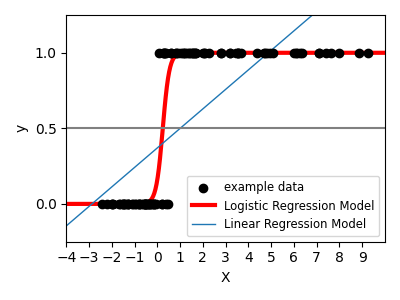

Supervised learning: predicting an output variable from high-dimensional observations¶
Nearest neighbor and the curse of dimensionality¶
k-Nearest neighbors classifier¶
The simplest possible classifier is the
nearest neighbor:
given a new observation X_test, find in the training set (i.e. the data
used to train the estimator) the observation with the closest feature vector.
(Please see the Nearest Neighbors section of the online
Scikit-learn documentation for more information about this type of classifier.)
KNN (k nearest neighbors) classification example:

>>> # Split iris data in train and test data
>>> # A random permutation, to split the data randomly
>>> np.random.seed(0)
>>> indices = np.random.permutation(len(iris_X))
>>> iris_X_train = iris_X[indices[:-10]]
>>> iris_y_train = iris_y[indices[:-10]]
>>> iris_X_test = iris_X[indices[-10:]]
>>> iris_y_test = iris_y[indices[-10:]]
>>> # Create and fit a nearest-neighbor classifier
>>> from sklearn.neighbors import KNeighborsClassifier
>>> knn = KNeighborsClassifier()
>>> knn.fit(iris_X_train, iris_y_train)
KNeighborsClassifier()
>>> knn.predict(iris_X_test)
array([1, 2, 1, 0, 0, 0, 2, 1, 2, 0])
>>> iris_y_test
array([1, 1, 1, 0, 0, 0, 2, 1, 2, 0])
The curse of dimensionality¶
For an estimator to be effective, you need the distance between neighboring points to be less than some value \(d\), which depends on the problem. In one dimension, this requires on average \(n \sim 1/d\) points. In the context of the above \(k\)-NN example, if the data is described by just one feature with values ranging from 0 to 1 and with \(n\) training observations, then new data will be no further away than \(1/n\). Therefore, the nearest neighbor decision rule will be efficient as soon as \(1/n\) is small compared to the scale of between-class feature variations.
If the number of features is \(p\), you now require \(n \sim 1/d^p\) points. Let’s say that we require 10 points in one dimension: now \(10^p\) points are required in \(p\) dimensions to pave the \([0, 1]\) space. As \(p\) becomes large, the number of training points required for a good estimator grows exponentially.
For example, if each point is just a single number (8 bytes), then an effective \(k\)-NN estimator in a paltry \(p \sim 20\) dimensions would require more training data than the current estimated size of the entire internet (±1000 Exabytes or so).
This is called the curse of dimensionality and is a core problem that machine learning addresses.
Linear model: from regression to sparsity¶
Linear regression¶
LinearRegression,
in its simplest form, fits a linear model to the data set by adjusting
a set of parameters in order to make the sum of the squared residuals
of the model as small as possible.
Linear models: \(y = X\beta + \epsilon\)
\(X\): data
\(y\): target variable
\(\beta\): Coefficients
\(\epsilon\): Observation noise
>>> from sklearn import linear_model
>>> regr = linear_model.LinearRegression()
>>> regr.fit(diabetes_X_train, diabetes_y_train)
LinearRegression()
>>> print(regr.coef_)
[ 0.30349955 -237.63931533 510.53060544 327.73698041 -814.13170937
492.81458798 102.84845219 184.60648906 743.51961675 76.09517222]
>>> # The mean square error
>>> np.mean((regr.predict(diabetes_X_test) - diabetes_y_test)**2)
2004.5...
>>> # Explained variance score: 1 is perfect prediction
>>> # and 0 means that there is no linear relationship
>>> # between X and y.
>>> regr.score(diabetes_X_test, diabetes_y_test)
0.585...
Shrinkage¶
If there are few data points per dimension, noise in the observations induces high variance:
>>> X = np.c_[ .5, 1].T
>>> y = [.5, 1]
>>> test = np.c_[ 0, 2].T
>>> regr = linear_model.LinearRegression()
>>> import matplotlib.pyplot as plt
>>> plt.figure()
<...>
>>> np.random.seed(0)
>>> for _ in range(6):
... this_X = .1 * np.random.normal(size=(2, 1)) + X
... regr.fit(this_X, y)
... plt.plot(test, regr.predict(test))
... plt.scatter(this_X, y, s=3)
LinearRegression...
A solution in high-dimensional statistical learning is to shrink the
regression coefficients to zero: any two randomly chosen set of
observations are likely to be uncorrelated. This is called Ridge
regression:
>>> regr = linear_model.Ridge(alpha=.1)
>>> plt.figure()
<...>
>>> np.random.seed(0)
>>> for _ in range(6):
... this_X = .1 * np.random.normal(size=(2, 1)) + X
... regr.fit(this_X, y)
... plt.plot(test, regr.predict(test))
... plt.scatter(this_X, y, s=3)
Ridge...

This is an example of bias/variance tradeoff: the larger the ridge
alpha parameter, the higher the bias and the lower the variance.
We can choose alpha to minimize left out error, this time using the
diabetes dataset rather than our synthetic data:
>>> alphas = np.logspace(-4, -1, 6)
>>> print([regr.set_params(alpha=alpha)
... .fit(diabetes_X_train, diabetes_y_train)
... .score(diabetes_X_test, diabetes_y_test)
... for alpha in alphas])
[0.585..., 0.585..., 0.5854..., 0.5855..., 0.583..., 0.570...]
Note
Capturing in the fitted parameters noise that prevents the model to generalize to new data is called overfitting. The bias introduced by the ridge regression is called a regularization.
Sparsity¶
Fitting only features 1 and 2
Note
A representation of the full diabetes dataset would involve 11 dimensions (10 feature dimensions and one of the target variable). It is hard to develop an intuition on such representation, but it may be useful to keep in mind that it would be a fairly empty space.
We can see that, although feature 2 has a strong coefficient on the full
model, it conveys little information on y when considered with feature 1.
To improve the conditioning of the problem (i.e. mitigating the The curse of dimensionality), it would be interesting to select only the informative features and set non-informative ones, like feature 2 to 0. Ridge regression will decrease their contribution, but not set them to zero. Another penalization approach, called Lasso (least absolute shrinkage and selection operator), can set some coefficients to zero. Such methods are called sparse methods and sparsity can be seen as an application of Occam’s razor: prefer simpler models.
>>> regr = linear_model.Lasso()
>>> scores = [regr.set_params(alpha=alpha)
... .fit(diabetes_X_train, diabetes_y_train)
... .score(diabetes_X_test, diabetes_y_test)
... for alpha in alphas]
>>> best_alpha = alphas[scores.index(max(scores))]
>>> regr.alpha = best_alpha
>>> regr.fit(diabetes_X_train, diabetes_y_train)
Lasso(alpha=0.025118864315095794)
>>> print(regr.coef_)
[ 0. -212.4... 517.2... 313.7... -160.8...
-0. -187.1... 69.3... 508.6... 71.8... ]
Classification¶
For classification, as in the labeling iris task, linear regression is not the right approach as it will give too much weight to data far from the decision frontier. A linear approach is to fit a sigmoid function or logistic function:
>>> log = linear_model.LogisticRegression(C=1e5)
>>> log.fit(iris_X_train, iris_y_train)
LogisticRegression(C=100000.0)
This is known as LogisticRegression.
Support vector machines (SVMs)¶
Linear SVMs¶
Support Vector Machines belong to the discriminant model family: they try to find a combination of
samples to build a plane maximizing the margin between the two classes.
Regularization is set by the C parameter: a small value for C means the margin
is calculated using many or all of the observations around the separating line
(more regularization);
a large value for C means the margin is calculated on observations close to
the separating line (less regularization).
Unregularized SVM¶
Regularized SVM (default)¶
SVMs can be used in regression –SVR (Support Vector Regression)–, or in
classification –SVC (Support Vector Classification).
>>> from sklearn import svm
>>> svc = svm.SVC(kernel='linear')
>>> svc.fit(iris_X_train, iris_y_train)
SVC(kernel='linear')
Warning
Normalizing data
For many estimators, including the SVMs, having datasets with unit standard deviation for each feature is important to get good prediction.
Using kernels¶
Classes are not always linearly separable in feature space. The solution is to build a decision function that is not linear but may be polynomial instead. This is done using the kernel trick that can be seen as creating a decision energy by positioning kernels on observations:
Linear kernel¶
>>> svc = svm.SVC(kernel='linear')
Polynomial kernel¶
>>> svc = svm.SVC(kernel='poly',
... degree=3)
>>> # degree: polynomial degree
RBF kernel (Radial Basis Function)¶
>>> svc = svm.SVC(kernel='rbf')
>>> # gamma: inverse of size of
>>> # radial kernel

Sigmoid kernel¶
>>> svc = svm.SVC(kernel='sigmoid')